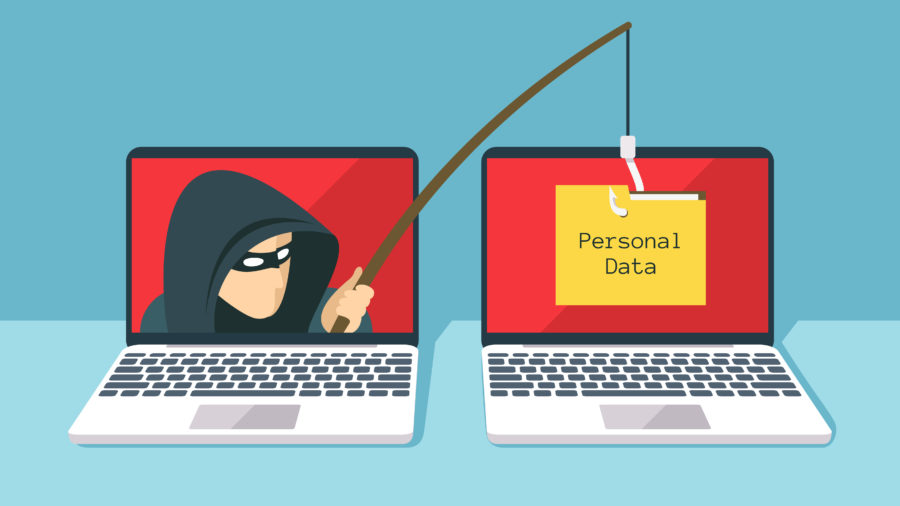

What is Phishing?
Phishing is similar to fishing in the aspect that one is using bait, yet different because the
bait is not used to
catch fish, but rather humans who fall for fake emails or websites created by cybercriminals to
obtain personal
information. These emails or websites often look too good to be true in the way that they offer
a big prize if the
user clicks on their hyperlink. The emails also pose a sense of urgency in the way that they may
portray the email
as an urgent matter in need of the user to perhaps ‘update’ their personal information in order
to not face a
consequence or suspension of their account.
Recent Scandal
Just this year in January, the Puerto Rican government had accidentally allowed phishers to
obtain 2.6 million
dollars due to an email phishing scam. The email claimed that the government agency’s existing
bank account could no
longer be used, thus the money had to be transferred to a new bank account. The email detailed
the new account to be
used, which turned out to be fraudulent and under the cybercriminals control.